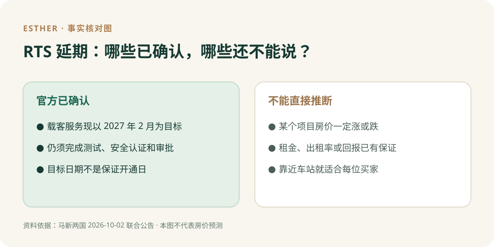

新山买家指南 · 资料核对：2026 年 10 月 4 日
RTS 新时间表：新山买家最关心的 5 个问题
直接回答：目前不能因为 RTS Link 的载客服务目标由 2026 年底调整到 2027 年 2 月，就断言新山某个地区的房价或租金会涨、会跌。官方公告确认的是交通项目的进度和剩余程序，不是房地产价格预测。若你正在买房，真正需要重新检查的是：你什么时候入住、现在怎样跨境通勤，以及看中的房子即使暂时没有 RTS 是否依然合适。马新两国 2026 年 10 月 2 日联合公告

原创事实核对图，不是价格走势图，也不代表任何项目预测。
1. RTS 现在确定什么时候开通？
还没有保证日期。RTS Operations 向马来西亚交通部和新加坡陆路交通管理局说明，载客服务现预计在 2027 年 2 月开始。营运方预计在 2026 年 12 月 31 日前完成最后系统测试与试运行；之后仍需独立安全认证及两国最终监管批准。因此应该称它为「目标」，不要写成「已确定 2 月开通」。官方联合公告
2. 时间表调整，能预测 Bukit Chagar 附近的房价吗？
**不能仅凭这则公告判断。**要分析某个项目或地区的价格，需要可比较的实际成交、供应、房屋条件及买家需求资料。公告没有给出房价数据或影响幅度。同样，也不能反过来保证 RTS 开通后价格一定上升。看到「会跌多少」或「必涨多少」的说法，应先问数据从哪里来、比较的是哪段时间及哪些房源。
3. 租金与出租需求会不会因此改变？
**有可能影响个别人的入住或通勤计划，但不能直接推算租金。**如果潜在租客原本打算开通后才搭车过关，目标时间变化可能使他重新考虑入住时间；这只是可能的行为变化，不能当成市场整体已经涨租或跌租的证据。投资买家仍须查实际租金、空置风险、持有开支和具体单位条件。
4. 现在买近站公寓，还值得看吗？
**可以看，但不能只为未来车站买单。**若你经常过关，可把住家到 Bukit Chagar 的接驳作为比较条件，同时确认开通前的现有通勤路线、实际单位价格、格局及总支出。若你很少跨境，车站距离可能不如工作、家庭、学校和日常生活路线重要。完整买家指南：RTS 延期后怎样重新比较通勤与预算
5. 有地住宅也会受 RTS 延期影响吗？
**影响取决于买家如何使用这条线路，不能只按房屋类型下结论。**常往返新加坡的有地住宅买家，仍需考虑从家到车站或现有过关路线；不依赖跨境通勤的家庭，通常更该比较空间、维护开支和本地日常路线。不要把整个新山的有地住宅，都说成会因这次两个月左右的目标调整而产生相同变化。
给正在看房的人：先分清事实与推测
| 可以核对的事实 | 仍需个案资料，不能保证 |
|---|---|
| 最新载客服务目标是 2027 年 2 月，且附带安全认证与审批条件。 | 某个楼盘的售价、租金、回报会怎样变化。 |
| RTS 连接新山 Bukit Chagar 与新加坡 Woodlands North。 | 某一套房实际的门到门通勤时间。 |
| 买家现在可以实测现有路线和支出。 | 列车开通后的使用体验、接驳和个人节省时间。 |
**要不要因这则新闻改变买房计划？**如果你必须在 RTS 载客前入住，先按今天的路线做决定；如果你买的是长期自住的家，先让预算和生活条件成立。未来交通便利可以作为加分项，但不应是唯一理由。
**想问自己的情况？**告诉我你的预算、每周过关次数，以及正在比较的新山地区。我会先帮你列出需要核对的条件，不用先指定楼盘。
WhatsApp 按钮：向 Esther 提问：RTS 与我的找房计划（读者自行检查并发送消息）
资料来源与核对日期
- 马来西亚交通部与新加坡 LTA 联合公告，2026-10-02：最新目标、测试、安全认证与监管批准。
- 柔佛州政府 Media Digital Johor，2026-10-03：马来西亚方面对最新目标和路线的说明。
- 新加坡 LTA RTS Link 项目概览：车站和线路背景；其较早开通目标不能替代最新联合公告。
**资料核对日期：2026 年 10 月 4 日。**本页没有对任何楼盘价格、租金、回报或贷款资格作预测。